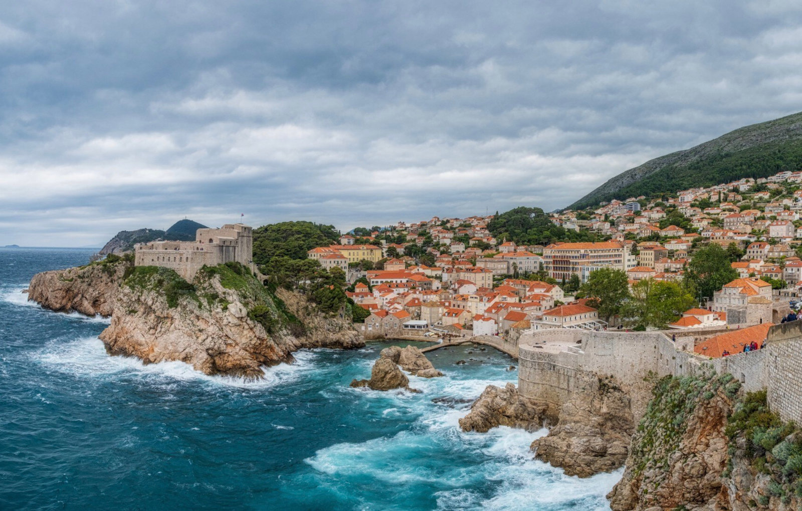

Amalfi Coast Escape
By Joyce Chen

We left the bustle of Rome at dawn, the sun just a pale smear on the horizon, and drove south in our compact Sprinter‑van turned mobile kitchen. The air grew sweeter with each kilometre, scented by lemon trees and sea‑spray, until the first glimpse of the Amalfi coastline appeared—a jagged line of pastel towns clinging to sheer cliffs above turquoise water.
Our first stop was Positano, where narrow, winding streets open onto a pebble‑strewn beach. After a brief stroll through a market of hand‑painted ceramics, we found a modest “area di sosta” just above the town. The van’s tiny platform slid out, a sturdy table for two set against a backdrop of sailboats bobbing in the inlet. With a portable gas burner and a fresh bundle of basil, we cooked spaghetti al limone, the citrus zest mingling with the salty breeze. The locals, curious about our rolling abode, offered fresh mozzarella and a glass of limoncello, and we ate al fresco as the sun rose, painting the cliffs in gold.

Mid‑day we headed east to Amalfi itself. Parking was a puzzle—tight, steep, and guarded by a watchful guard who demanded a modest fee for a single night’s stay. Inside the van, the small kitchenette transformed into a makeshift bar. We whisked together a quick bruschetta using sun‑dried tomatoes we’d bought in a roadside stall, then poured ourselves a glass of local Falanghina, toasting the sea that stretched endlessly beyond the balcony.
The real magic came at night. We parked a short walk from the famed “Path of the Gods” trail, the van’s solar panels humming quietly under a sky ablaze with stars. After a long hike that rewarded us with panoramic views of the crescent‑shaped coastline, we returned to our snug sleeping nook, the sound of waves crashing against the cliffs a lullaby. Wrapped in a blanket, we fell asleep to the distant echo of a baritone singer from a nearby trattoria, his voice drifting up the hill.

By sunrise on the third day, our van was half‑filled with postcards, seashells, and a lingering sense of freedom. The Amalfi Coast had offered us more than picturesque scenery—it gave us a taste of living lightly, moving intentionally, and savoring each bite, each view, each moment. As we turned the wheel toward Naples, the road ahead felt less like a route home and more like the beginning of countless future escapes.